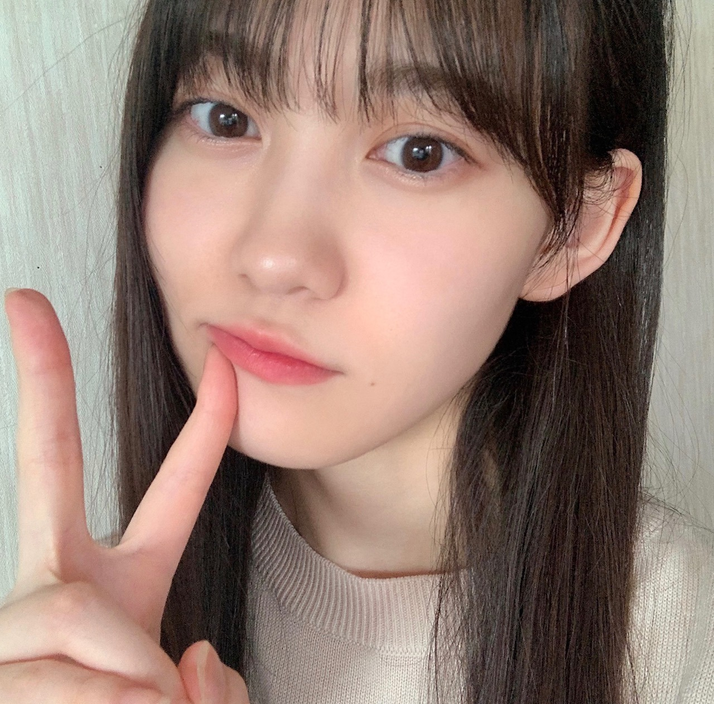
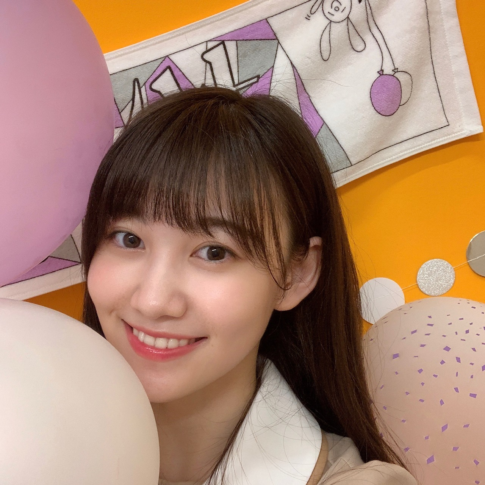
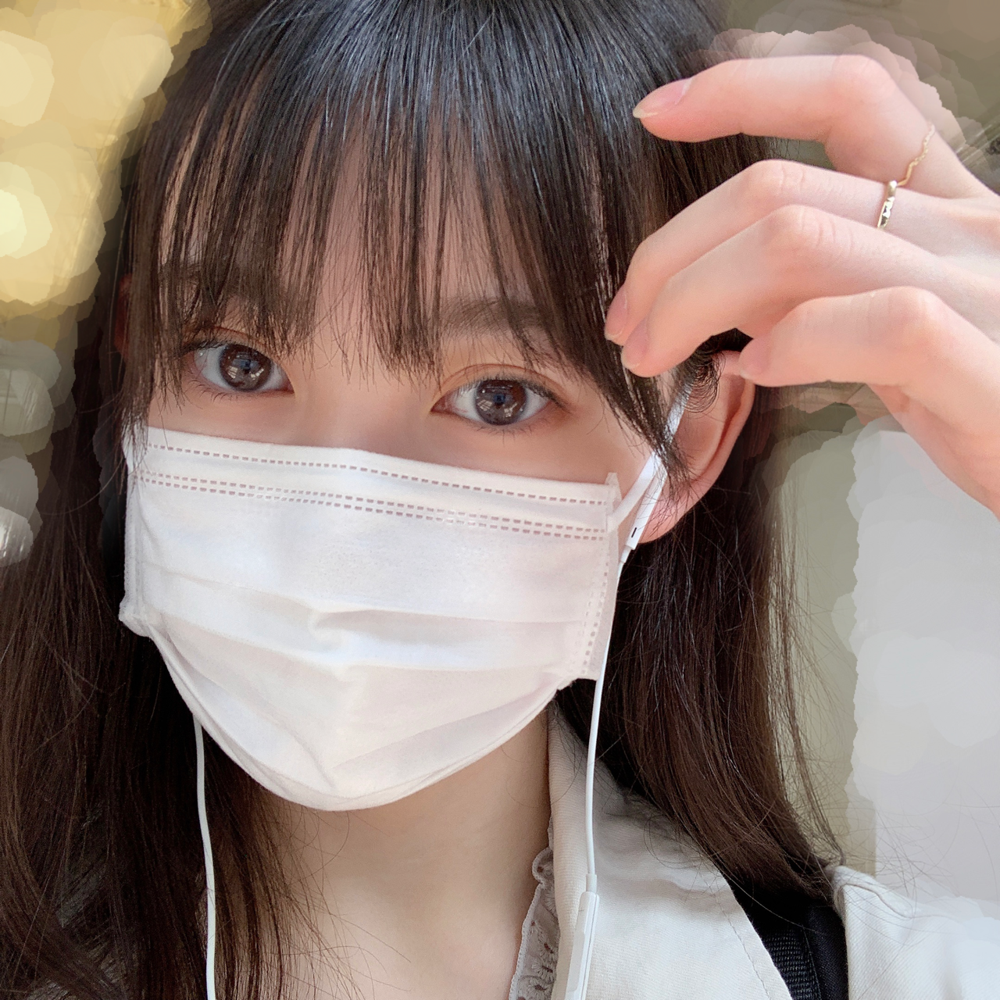

2020/0629Monうさこあら 松尾美佑
小学校の時、雨の日の窓ガラスに絵を描くのが好きでした¨̮
おぉ！ となるような上手な絵が描ける訳では無いので、
いつも窓ガラスに描いていたのは
とりあえず点を2つと、にーっと線を引いて
顔の出来上がりです¨̮
気が向いたらそれに耳を付けてみたり。
千葉県出身、高校2年16歳の
松尾美佑(まつおみゆ)です。
よろしくお願いします¨̮


今日は うさこあらさん についてちょこっと。
46時間TVでデザインさせて頂いたマフラータオルにも、
そしてサインにも、
うさこあらがいます。

うさこあらさん
右上で紫と白の風船を持ちながら手を振ってくれている方です。
私もお揃いにしようと思って紫と白の風船をブースに飾っていました☺︎
ある日私は 100%のウサギを描きました。
友達に コアラ？ と言われました。
なので うさこあら です。
単純ですね
ᐠ( ᐛ )ᐟ
でも今見てもこの子は100%ウサギです。
これからもうさこあらさんと共に頑張ります
いつも穏やかな表情で親しみやすいお顔なので、是非お友達になってください

うさこあらさん編〜完〜
お返事します。
✽今回の個別マフラータオルのデザインどんな意味を込めてるのかとかもしあったら教えて欲しいな！
こだわりは
紫と白とグレーの幾何学模様？(って言うのかな？)の所は大きく MIYU になっています！
あとは うさこあらさん が上からこんにちはしている所です¨̮
かっこよさと可愛さをいれたくて何通りも考えてあのデザインに決めました！
✽まるちゃんの好きな食べ物はなに？
食いしん坊なので基本何でも尻尾をフリフリしながら食べています。
何を1番 美味しい！ と思っているのか気になるね〜と父と話していました。
今朝はすいかをちょこっと食べてました^^
✽今朝もキウイ食べましたよ
ミュウちゃんはキウイ食べたかな？
食べました！
すいかとパイナップルとさくらんぼも食べました！
✽美佑ちゃんの好きな女の子の髪型知りたい！
ショートの子が片方耳掛けする仕草が大好きで、ショートの子可愛いなぁ〜！って思います。
あとは、ミディアム〜ロングでゆるっと巻いている方もすっごい可愛いです。
ベリショが似合う方も本当に綺麗でかっこよくて好きです。
全部好きです。
✽好きな方言は何ですか？（因みに私は大阪弁喋ってます〜）
ぱるの不意に出る鳥取弁のファンです。
だがんなー って。
方言に憧れます！
大阪弁も好きです☺︎
✽私の声は届いてるかなぁ〜(*´ー｀*)
届いてる〜(*ˊᵕˋ*)
明日は〜
| ᐕ)⁾⁾
なお〜〜〜〜〜〜〜〜〜〜〜〜
ミュウでした¨̮
5日後までばいばいっ


PROFILE
新4期生リレー
202104
| SUN | MON | TUE | WED | THU | FRI | SAT |
|---|---|---|---|---|---|---|
| 1 | 2 | 3 | ||||
| 4 | 5 | 6 | 7 | 8 | 9 | 10 |
| 11 | 12 | 13 | 14 | 15 | 16 | 17 |
| 18 | 19 | 20 | 21 | 22 | 23 | 24 |
| 25 | 26 | 27 | 28 | 29 | 30 | |

コメント(235)
今日もブログ更新してくれてありがと¨̮
ちょっと遅くなったんだね 大丈夫大丈夫〜
かやだよー
これは自分の二回目のコメントになっております ぅ！
知ってる〜？
テンションがどんな下げても
美佑ちゃんのブログを読むだけで元気になれる気がする ˃̶͈ᴗ˂̶͈
ちなみにわたしは台湾出身、福岡で大学に通ってるよ
（聞かれてないけど）（許して*ˊᵕˋ*）
年が近い（？）からブログで紹介してくれたヘアアレンジは本当に参考になった〜
できるだけもっとやってほしいなあって(◍•ᗜ•́)✧
読んでくれてありがとう！
では また5日=͟͟͞͞➳❥
ミュウちゃんかわいい！
ブログ更新ありがとう♡
これで13回目のブログだね！！
46時間TVのミュウの自己紹介が
可愛すぎて頭から離れない〜笑
ミュウ大好き!!☺︎☺︎
みにいより〜！！
うさこあらさん可愛すぎる！！！ミュウちゃんのセンス最高
うさこあらさんとミュウちゃん見て元気出します！！！
もうすぐで夏休みだから、大学の課題頑張ります！！！
また5日後のブログで！！！バイバイ
にょこ
| ᐕ)⁾⁾
ブログありがとう！！！
可愛い可愛いお写真もありがとう⸜♡⸝
大好きだよ～(*´˘`*)
マフラータオル可愛いね！
好きなアーティストっていますか？
ブログ更新ありがとう！！
窓ガラスにニコちゃん。めちゃくちゃ共感したわ(笑)
うさこあら可愛いね。美佑ちゃんが100%うさぎって言ってんだからうさぎだねこの子は！！
僕は絵が下手なのでうさぎとも認識されないかも(笑)だから不必要に絵は描きません(笑)
美佑ちゃんの他に描いた絵見てみたいなぁ。
ではでは、また5日後！またね
秋田より
うさこあらさん、コアラには見えないですね笑
かわいい(^^)
たくさん写真もありがとうございます!!
次の更新も楽しみに待ってます^ ^
46時間テレビ見れなかったところを見直してみたよー笑
どの瞬間もとっても素敵な笑顔で癒されました。
ウサコアラさんめちゃかわいい！
質問に返信してくれてめちゃくちゃ喜びに溢れてる！
タオルが届くの楽しみにしてるね！
みゆスマイルは私たちファンの原動力
これからも素敵な笑顔を待っています(*´∇｀*)
大好き(*´˘`*)
この前のブログで同い歳に呼ばれたい呼び方みたいなのでみゆちゃんって言ってたからみゆちゃんって呼んでみた！笑
１枚目の写真いつもと違ったゆるゆるな感じがかわいいね！
うさこあらさんかわいい…！
なんかゆるかわ？みたいな感じ！プーさんに出てくるピグレット？なんかピンクの子に似てる気がする！笑
わたし髪の毛ミディアムからロング辺りだから握手会できる日が来たら緩くふわふわ巻けるように今から練習します！笑
今テストに向かって勉強頑張ってるんですけどよかったらエールみたいなの言ってくれたら嬉しいです…！
なんでちょっとしたわがままです笑笑
ブログ更新ありがとう！
また読める日を楽しみにしています♡
窓に絵を描くミュウ可愛いなあ(*´ω｀*)
でもこれはきっと誰でもやったことあるよね＼(^o^)／
1枚めと2枚め、間違い探しみたい（笑）
うさこあら可愛いじゃん？
さん付けはマスト？
もう100%うさぎだから、「うさこあら」は名前みたい？
ああ、可愛い、うさこあらの編(*´ω｀*)
質問返し
・片耳書けてって、るなぴは？
・もっとせいらちゃんと関西弁で話してほしいなあ＼(^o^)／もっと聴きたいなあ(*´ω｀*)
これからも頑張って(/･ω･)/
ああ、指輪可愛い(*´ω｀*)♡
最近雨が多くて嫌な天気が続きますねぇ〜
ミュウちゃんは雨の日はお好きですか？？
お風呂の壁や鏡に絵を描くのは幼き頃によくやったものです。
ミュウちゃんデザインのタオルかっこよくて可愛くて素敵！
うさこあらさんに早く会いたい(´∀｀)
質問です！
気になってたのですが、ミュウちゃんがいつも使ってる顔文字？は予測変換に出てこないのですが、どうしたら使えるようになりますか？？
ブログ更新ありがとう！次回も楽しみにしてます！
では！バイジョーじ！
うさこあらさん可愛いですね
乃木坂にはキャラクターがいっぱい居るので対抗して人気にさせましょう！笑
僕も大阪弁というか関西弁なので親近感が湧きます
またの更新楽しみにしていますね
推しタオル買うよ～( ¨̮ )
ミュウはミュウでもミュウはなんでしょうか？
((謎過ぎて恐怖))
ごめんなさい。
ミュウちゃんの可愛い写真見てテンション上がってしまいました、、(´･･`)
今日も1日お疲れ様！！
明日もお互い頑張ろうね～¨̮♡
こはくまるより。( ´ ▽ ` )ﾉ
あいらぶ坂道研修生
うさこあらさんっていうのか！
覚えとくねーー笑
タオルすごいオシャレでよかった！！
買おっかなぁーー！
また後で質問とかするねー！
じゃ、またー
すぎしょ
もちろん。☆
(友達なります、っ！)
、、ありがとうございます
ウキウキ☆
いやはや、
もうすぐ７月ですわね
(心の準備、いかが？)
よき６月のまとめ。に
しましょうーっ♪
さあ
明日もいい日に
なりますよーに☆
待ってたよー！
うさこあら可愛い笑
質問:夜寝る時ってちゃんとパジャマ着てる？それとも楽なジャージとか着てる？
ブログ更新ありがとう！
みゆちゃんのタオル買うかめちゃくちゃ悩んでるんですが、うさこあらさんのこと知って買いたい欲が強くなってきてます笑
質問です!
よく観るスポーツは何かありますか？
うさこあらさん(Ｕ･×･Ｕ)とっても可愛いです♡
ずっと可愛いキャラクターだなーって気になってたんです！詳細を知れてなんだか嬉しい気分です！
この子、サインにも入ってたりするのかなー？？？ゆるーく楽しみにしてます☻
またまた質問させてください！
＊お気に入り文房具はありますか？
(私も学生で、文房具ひとつでだいぶ勉強のモチベーションが変わるなって思ってて、あわよくば美佑ちゃんとお揃いにできちゃったりしたら頑張れるなーって（´-`）.｡oO)
サラッと答えられそうなものにしてみました！
ぜひぜひ答えていただけると喜びます！！！！
学校との両立も大変だと思いますが、頑張ってください！
ずっと応援しています٩( ˙ỏ˙ )۶
こんばんは
うさこあらって言うんだね‼︎かわいい
ポストカードの裏のメッセージのところにも書いてくれていたよね
ミュウちゃんのタオル買ったよ〜
ライブがまたできるようになったらいっぱい振るから見つけてくれたら嬉しいです‼︎
また5日後ね!今日もありがとうございました
りーくん
あっ、まず46時間TVおつかれたま！
新四期生が急にコーナーをもつやつはじたばたしてたのが新鮮で可愛かった～
ミュウちゃん好きです。
会える日を楽しみにしてます！
それでは！
大好きだよーーーぉ！！！
いつも5日間楽しみにしてます！！
うさこあらさんの情報やタオルの模様の話を聞けたのでタオル買おうか迷ってます…！！
(金欠になりそうでまだビビってます…)
まだまだ、コロナは落ち着いてないので体調に気をつけてください！！
松尾ミュウ！
46時間TVお疲れ様でした！
初めての出演で大変だったと思いますがすごく面白かったです！
新4期生でつなぐ時間が、ものすごく良かったです！
またイベントなどが開催されたら色々大変かと思いますが応援しています！
がんばってください！
いつか握手会でかけていくね！
私もみゆちゃんみたいにかわいくなりたい、、、
どうしたらかわいくなれますか？
ブログありがとう！
うさこあらｶﾜｲｲ……
ミュウちゃんもｶﾜｲｲ…
てことでタオル買いました！！
ライブとかでタオル掲げれる日が早く来て欲しい！
ミュウちゃんにも会いたい！！！
あのサインのうさぎの招待知れて良かった笑
また五日後楽しみにしてます！
誕生日にブログ更新してもらって幸せ〜
46時間TVお疲れ様でした！お菓子の家作りもお疲れ様！
推しメンタオルも買いました！
もう最後の画像の芸能人オーラがすごいです笑
乃木坂46に加入して、まだ話したことないメンバーっていますか？
このパッターンのイラストは、マンガンように、コメント入れると絵が生えると思う。
イラストだけでは、感覚は伝わるけどぼわあーんとした感じなため
ブログ更新ありがとう！
片耳がけめっちゃ可愛いの分かる（特にショート）
みゆちゃんの両耳がけも密かに推してます
Q、もし次機会があればなんですけど46時間ᴛᴠのツーショットトーク誰々とやってみたい！なのありますか？
ほなまた5日後ー
うさこあらさん
最高ーーーです！！！
ブログ更新お疲れ様 (´・ω・｀)
＞ぱるの不意に出る鳥取弁のファンです。
情報ありがとうm(__)m
早く握手会で会いたいなぁ(´・ω・｀)
今後とも山口さんの事をよろしくお願いします
おやすみおな
良い夢を
また明日
体調に気をつけてねー
うさこあら！可愛いね
やっぱり方言憧れるよねー！
与田ちゃんの福岡弁とか半端ない
また5日後楽しみにしてるねー！
さっき同じみゆちゃん推しの人と話してて、今回ブログ更新時間遅かったからみゆちゃん忘れちゃってたのかな、マネージャーさんから連絡来たのかなとかっていう想像をしてました笑
それだけです笑 ふたつも失礼しました…！笑
コメントする